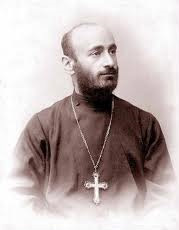

Կոմիտաս
(1869-1935)
 Կոմպոզիտոր, ազգագրագետ, գիտնական, մանկավարժ, խմբավար, երգիչ, հասարակական հզոր եռանդի տեր արվեստագետ Կոմիտասին վիճակվեց շրջադարձային դեր խաղալ հայ երաժշտական մշակույթի պատմական զարգացման ճանապարհին:
Կոմիտասի մեծագույն վաստակը ազգային վերածննդի դարաշրջանի գեղարվեստական գաղափարների կուտակումն էր, դրանց մարմնավորման կենսունակ ձևերի հայտնաբերումը: Մշակելով իր գեղագիտական իդեալները, հիմնվելով հայ երաժշտության խոր և բազմակողմանի ուսումնասիրության վրա՝ նա առաջ քաշեց հայ երաժշտության ինքնուրույնության կարևոր թեզը և իր բազմաբնույթ գործունեությամբ հիմնադրեց ազգային դասական երաժշտությունը, կանխանշեց նրա հետագա զարգացման ուղիները:
Կոմիտասը հայ երաժիշտներից առաջինը հայտնաբերեց ազգային արվեստի ինքնատիպության հուսալի ակունքները, գիտնականին հատուկ հետևողականությամբ հետազոտեց և բացահայտեց այդ ինքնատիպության օրինաչափությունները: Կոմիտասը հրապարակախոսին հատուկ կրքոտությամբ պաշտպանեց հայ երաժշտության ինքնուրույնության գաղափարը:
Դեմոկրատ արվեստագետը հայ գեղջուկի ստեղծագործությունը բնորոշեց որպես ազգի հոգևոր հարստությունների շտեմարան: Ազգայինի հավատարիմ ջատագովը չսահմանափակվեց ազգային նեղ շրջանակներում, մեզանում առաջինը խորությամբ ուսումնասիրեց Մերձավոր Արևելքի ժողովուրդների երաժշտությունը, հանրաճանաչ դարձրեց քրդական ժողովրդական երգը:
Հայրենասեր արվեստագետ Կոմիտասը հոգատարությամբ հավաքեց հայ գեղջուկի երգերը, մշակեց և իր ոգեշունչ կատարմամբ խթանեց ազգային հոգևոր արժեքների տարածումն ու ճանաչումը:
Հայ ժողովրդի գեղարվեստական գանձարանի հարստությունն արժեքավորող Կոմիտասը ավանդապահ էր: Իր ժողովրդի ապագայի մասին մեծագույն կրքոտությամբ հոգացող արվեստագետն ավանդախախտ էր: Պահպանելով անցյալի արժեքները՝ նա պատմականորեն կոչված էր զարգացնել, հայտնաբերել դրանց կենսունակությունը, նորին ծառայեցնելու ուղիներն ու ձևերը: Այդ ճանապարհին նրան վիճակվեց կերտել ազգային ոճի բարձր չափանիշները:
Հայ ժողովրդի ճակատագրով և ազգային մշակույթի զարգացման հեռանկարներով խորապես մտահոգված Հ.Թումանյանը, Հ.Հովհաննիսյանը, Ավ. Իսահակյանը, Ա. Չոպանյանը, Գ. Լևոնյանը, Փ. Թերլեմեզյանը, Ե. Թադևոսյանը ոգեշնչում էին Կոմիտասին, քաջալերում նրան ստեղծագործական որոնումներում:
Բանիմաց հայրենակիցների կողմից սիրված Կոմիտասի արվեստը գրավեց օտարազգի խոշորագույն երաժիշտներին՝ Կ. Դեբյուսիին և Կ. Սեն-Սանսին: Նրա ստեղծագործական նվաճումներն ու գործունեության ուղղվածությունը բարձր գնահատեցին Մ. Գնեսինը (Ռուսաստան), Օ. Ֆլայշերը և Ա. Մելիշարը (Գերմանիա), Պ. Օբրին և Լ. Լալուան (Ֆրանսիա), գերմանացի, ֆրանսիացի, շվեյցարացի, ավստրիացի արվեստասերները:
Կոմիտասի կյանքի ու գործի իրական արժեքավորումը հիմնականում կապված է հետպատերազմյան շրջանի հետ: Բազմաթիվ նոր նյութերով համալրվեց արխիվը, դրվեց կոմպոզիտորի երկերի բազմահատոր ժողովածուի հրատարակության սկիզբը (1966 թ.): Դա խոշոր կոմիտասագետ Ռոբերտ Աթայանից տասնյակ տարիներ տքնաջան, բազմակողմանի ու մանրազնին աշխատանք պահանջեց: Մեծ ընդգրկումով. ծանրակշիռ դիտողություններով ու ծավալուն ծանոթագրություններով հարուստ այդ աշխատանքը մեծ նվիրումի արդյունք էր:
Վերջին տասնամյակներում լույս տեսան արժեքավոր մենագրություններ, ոաումնասիրություններ, հանրամատչելի գրքույկներ, մատենագիտական ժողովածուներ, հարյուրավոր հոդվածներ: Գիտական լուրջ ոաումնասիրությունները տեղ գտան «կոմիտասական» ժողովածուներում: Կոմիտասագիտությունն այսօր, հայ երաժշտագիտության մեջ ազգայինի համար առանցքային հարցերի լուսաբանման տեսակետից, ամենից արգասավոր ճյուղերից է:
Արվեստագետի կերպարը ոգեշնչեց բանաստեղծներին ու արձակագիրներին, քանդակագործներին ու նկարիչներին: Բանաստեղծական հզոր ներշնչանքով կյանք ստացավ Պարույր Սևակի «Անլռելի զանգակատունը», որը մեծարժեք պոեզիայի ու գիտական ճշգրտության ամբողջական ձուլվածք է:
Կոմիտասի արվեստն ուղղակի ու միջնորդավորված ներգործեց երաժշտական մշակույթի ողջ ընթացքի վրա: Բազմաթիվ ու բազմաբնույթ ստեղծագործություններում հնչեցին Կոմիտասի ձայնագրած մեղեդիները, նրա անհատականության բովով անցած ժողովրդական արվեստի գոհարները: Հայ երաժիշտների մի քանի սերունդ որդեգրեց նրա գեղարվեստական սկզբունքները, համարձակորեն ընդլայնեց նրա նշագծած ուղիները: Հնուց ի վեր մեծաշնորհ երաժիշտների ծննդավայր է ճանաչվել Գողթն գավառը, որի Ցղնա գյուղից էին Կոմիտասի նախնիները: 17-րդ դարի վերջին տեղափոխվելով Փոքր Ասիայի Կուտինա (Քյոթահյա) քաղաքը՝ նրանք պահպանեցին իրենց հարուստ երաժշտական ավանդույթները:
1869 թվականի սեպտեմբերի 26-ին արհեստավոր Գևորգ Սողոմոնյանի և Թագուհի Հովհաննիսյանի ընտանիքում ծնվեց Սողոմոն Սողոմոնյանը՝ ապագա մեծ երաժիշտ Կոմիտասը:
Մեկ տարեկան էր երեխան, երբ մեռավ մայրը: Տեղի քառամյա դպրոցն ավարտելուց հետո նա ուսումը շարունակեց Բրուսայում (Բուրսա), սակայն հոր մահից հետո (մեկ տարի անց) նրա ուսումն ընդհատվեց:
Պատանու ապագան կանխորոշեց գեղեցիկ ձայնը: Էջմիածնի հանձնարարությամբ ճեմարանի համար լավ ձայն ունեցող երեխա ընտրելիս խորաթափանց եպիսկոպոս Դերձակյանը քսան որբերից Սողոմոնին առանձնացրեց: «Եթե բախտն ինձ չժպտար, և ես Ս. Էջմիածին, և ապա Գերմանիա չգնայի, կլինեի իմ հայրենիք Կուտինայում շատ-շատ մի կոշկակար, որովհետև որբիս խնամող Հարություն հորեղբայրս էլ կոշկակար էր և ակնհայտի բան է, որ ես էլ, ամենայն հավանականությամբ, նրան պիտի աշակերտեի», -գրել է Կոմիտասը:
Էջմիածնում անցկացրած տարիներին Կոմիտասը հաղորդակից եղավ հայկական մշակույթին և մասնավորապես հայ գրականությանն ու պատմությանը: Բայց նրա վրա ամենամեծ ազդեցություն թողեցին հայ գեղջուկ երգն ու երաժշտությունը, և ուսումնառության տարիներից նա իր կյանքը նվիրեց ժողովրդական երգերի ու երաժշտության գրառմանը, ուսումնասիրությանն ու այնուհետև՝ մշակմանը:
1893 թ. ավարտելով ուսումն Էջմիածնում՝ Կոմիտասը նշանակվեց ճեմարանի երաժշտության դասատու և երգչախմբի ղեկավար: Նույն թվականին, աբեղա ձեռնադրվելիս, ստանում է «Կոմիտաս» անունը:
Ինքնուրույն աշխատանքի տարիները ցույց տվին երաժշտական-տեսական գիտելիքների պակասը: Լուրջ մասնագիտական կրթություն ստանալու նպատակով նա 1895 թ. աշնանից Թիֆլիսում պարապում է Մ. Եկմալյանի մոտ, իսկ հաջորդ տարի մեկնում Գերմանիա:
Բեռլինում Ռիխարդ Շմիդտի մասնավոր կոնսերվատորիայում ուսանելուց բացի, Կոմիտասը միաժամանակ հաճախում էր Բեռլինի համալսարանի փիլիսոփայական բաժանմունքը: 1899 թ. կոնսերվատորիան ավարտելու ժամանակ Բեռլինի Միջազգային երաժշտական ընկերության նիստին Կոմիտասը զեկուցում կարդաց (գերմաներեն) հայ երաժշտության մասին: Այդ զեկուցումը կազմակերպված էր Բեռլինի համալսարանի երաժշտական պատմության պրոֆեսոր Օսկար Ֆլայշերի նախաձեռնությամբ, որը հայտարարեց, թե Բեռլինում առաջին անգամ է զեկուցում կարդացվում հայ երաժշտության մասին և գուցե Փարիզի ցուցահանդեսում անգամ նման զեկուցումներ չեն կարդացվել: Շնորհիվ Կոմիտասի, գերմանացի երաժիշտները առիթ ունեցան ծանոթանալու հայ ժողովրդի ինքնատիպ երաժշտական արվեստին: Ավարտելով ուսումը՝ Կոմիտասը վերադարձավ Էջմիածին և ոգևորությամբ ու ստեղծագործական ավյունով վերսկսեց իր գործունեությունը ճեմարանում: Հագեցած ու արդյունավետ էր Կոմիտասի խմբավարական աշխատանքը ճեմարանի երգչախմբի հետ: Քաջ տիրապետելով արևմտաեվրոաական երաժշտության օրինաչափություններին՝ հայ ժողովրդական երաժշտության գիտակը ստեղծեց հայ ժողովրդական երգի բարձրարժեք մշակումներ, որոնք կատարում էր ճեմարանի երգչախումբը:
«Կոմիտաս վարդապետը, որքան գիտենք, միակն է ճեմարանի սաներից, որ արհամարհելով աստվածաբանությունը և ընտրելով երաժշտությունը, այսօր, իր ֆարաջայի շնորհիվ մուտք գործելով չոր ու ցամաք աստվածաբանության և գրաբարի այդ մենաստանը, կենդանի երգ, սիրտ ու զգացմունք է ներշնչում ճեմարանի սաների մեջ»:
Խրախուսանքի ջերմ խոսքերին հակադրվում է հետադիմական պարբերականը. «Հ. Կոմիտասը աշակերտության համերգ է սարքում, էլ դես ու դեն ընկնել չկայ, վերոհիշյալ «ժողովրդական երգերի» թիվը կրկնապատկում, իսկ շատ անգամ էլ եռապատկում է, և ահա ձեզ հայկական կոնցերտ վեղարավոր կոմպոզիտորի: Մենք տեսանք անհատներ, որոնք ցավելով էին հիշատակում Ս.էջմիածնում տեղի ունեցող այն երևույթը, մենք տեսանք սրտացավ մարդիկ, որոնք տխուր խորհրդածություններից հետո հառաչաձայն «Օ~, ժամանակներ, օ~, բարքեր» էին բացականչում»: Կոմիտասի գործունեությունը սահմանափակելու բոլոր փորձերը ապարդյուն էին: 1905-1907 թվականների ընթացքում նա դասախոսություններով ու համերգներով հանդես է գալիս Անդրկովկասի և Արևմտյան Եվրոպայի քաղաքներում (Թիֆլիս , Բաքու, Փարիզ, Բեռն, Լոգան, Ժնև):
Կոմիտասի համերգային շրջագայությունները նպատակ ունեին հասարակությանը ծանոթացնել հայ ժողովրդական երաժշտությանը և այդ ասպարեզում կատարած ոաումնասիրություններին: Իր դասախոսությունները Կոմիտասը ուղեկցում էր ժողովրդական երգերի ոգեշունչ մեկնաբանմամբ: Ներքին մեծ հուզմունքով կատարում էր քնարական, աշխատանքային, ծիսական և այլ երգեր, ղեկավարում իր կազմակերպած երգչախմբերը, որոնց մասնակից էր դառնում տեղի հայ երիտասարդությունը:
Արտասահմանյան շրջագայություններին հաջորդող տարիներին (1907-1910) հետադիմական կղերականությանը Էջմիածնում ծանր կացություն ստեղծեց երաժշտի համար: Այդ մասին է Մ. Բաբայանին գրված նամակը.
«...չ խելք են թողել, ոչ միտք, անհանգիստ բան եմ եղել, հոգիս բերանս է հասել. երևակայիր, որ շրջապատված եմ թանձր մառախուղով, ուզում եմ լույս, պայծառ լույս տեսնել, հեռանալ վեր, շատ վեր, այրող արևի հետ ապրել, բայց ճանապարհ չեմ գտնում, անիրավ օդի մեջ խեղդամահ եմ լինում: Մարդ չկա, որին բանաս սիրտդ, մարդ չկա, որից մի բան լսես... Ես զարմանում եմ, թե ինչու մինչև այժմ չեմ խելագարվել այս մթնոլորտի խարդախ վայրերում»:
Ստեղծված վիճակը Կոմիտասին ստիպեց պաշտոնական նամակով դիմել կաթողիկոս Իզմիրլյանին:
«Քսան տարվա ընթացքում շրջապատն ինձ թույլ չի տվել այն անելու, ինչ կարող էի, որովհետև, տեսա միայն որոգայթ և ոչ արդարություն: Նյարդերս թուլացել են, այլևս տոկալու ճար ու հնար չունեմ, որոնում եմ հանգիստ, չեմ գտնում, ծարավ եմ ազնիվ աշխատանքի, խանգարվում եմ, փափագում եմ հեռու մնալ խցել ականջներս՝ չլսելու համար, գոցել աչքերս՝ չտեսնելու համար, կապել ոտքերս՝ չգայթակղվելու համար, սանձել զգացումներս՝ չվրդովվելու համար, բայց զի մարդ եմ, չեմ կարողանում: Խիղճս մեռնում է, եռանդս պաղում է, կյանքս մաշվում է և միայն վարանումն է բուն դնում հոգուս և սրտիս խորքում:
... Քսան տարի կորցրի, գոնե մնացած տարիներս շահեցնեմ և անդորրությամբ գրի առնեմ ուսումնասիրություններիս պտուղները: 5 սեպտեմբերի, 1909 թ.»:
Իգմիրլյանը մերժեց Կոմիտասի ողբ-ուղերձը՝ դրանով իսկ ծանրացնելով նրա վիճակը: Մեկ տարի անց, 1910 թ. Կոմիտասը հեռացավ Էջմիածնից՝ հաստատապես որոշելով այլևս երբեք չվերադառնալ: Բնակավայր ընտրելով Պոլիսը՝ Կոմիտասը չէր ենթադրում, թե ինչպիսի ողբերգական վախճան է ունենալու այնտեղ:
Կոմիտասի գործունեությունը Պոլսում ակնառու բեկում առաջացրեց տեղի հայ (և ոչ միայն հայ) բնակչության գեղարվեստական կյանքում: Սակայն Պոլսում ևս Կոմիտասը ազատ չէր տգետ կղերականության թշնամանքից: Նա կրկին բողոքում է Մ. Բաբայանին.«Չես կարոդ երևակայել, թե ինչեր քաշեցի, ինչ օյիններ սարքեցին տխմար տիրացուներն էստեղ, բայց ես հաղթեցի և հայ երաժշտությունը հնչեցրի նորից»:
Վաղուց ի վեր երազելով երաժշտանոց ստեղծել հայ երիտասարդության համար՝ Կոմիտասը հույս էր տածում իրականացնել այն Պոլսում: Նրա ծրագրի համաձայն երաժշտանոցը պետք է ծառայեր հետևյալ նպատակներին.
- Ուսումնասիրել հայկական և եվրոպական երաժշտությունը:
- Ունենալ ձայնական ու գործիքային դասարաններ:
- Կազմակերպել զեկուցումներ երաժշտական խնդիրների շուրջ:
- Հիմք դնել երաժշտական հրատարակության:
- Ունենալ մշտական երգչախումբ:
Սակայն երաժշտանոցի փոխարեն՝ շատ ջանք գործադրելուց հետո Կոմիտասին հաջողվեց ստեղծել 300 հոգուց բաղկացած «Գուսան» երգչախումբը, որի կազմակերպմանն օժանդակեցին հայ երիտասարդությունը, արվեստասեր հայրենակիցները:
Կոմիտասի ղեկավարած երգչախումբը մեծ հաջողությամբ հանդես էր գալիս Պոլսում, Իզմիրում, Եգիպտոսի քաղաքներում: Լուսաբանելով Կոմիտասի գործունեությունը, հեղինակներից մեկը կծու հեգնանքով գրում է Էջմհածնի կղերականության մասին.«Գոհ ենք Էջմիածնի ճեմարանի վարչությունեն, որ աննպաստ պայմաններ ստեղծելով հ. Կոմիտասի նման հազվագյուտ միաբանի մը համար, պատճառ եղավ անոր մեր կողմերը երևնալուն»:
Խմբավարական և մանկավարժական գործունեության հետ մեկտեղ Կոմիտասը շատ ժամանակ և եոանդ էր հատկացնում ստեղծագործական աշխատանքին, շարունակում խազերի վերծանման գործը: ժողովրդական երգերի գրառման նպատակով 1913 թ. ամռանը Կոմիտասը գնաց Էջմիածին: Ըստ երևույթին նա մտադիր էր մնալ այնտեղ, սակայն, ինչպես ինքը նամակում բողոքել է, «ոչ ոք նրան այդ չի առաջարկել»:
1914 թ. հունվարին Պոլսում Կոմիտասին այցելեց ռուսական երաժշտական մշակույթի նշանավոր գործիչներից մեկը՝ Մ.Ֆ. Գնեսինը, որը հայ երաժշտին նվիրած իր հուշերում գրել է. «Կոմիտասն ինձ վրա թողեց կատարյալ աշխարհիկ մարդու տպավորություն: Նա շատ լավ է խոսում ռուսերեն: Լսելով, որ ես եղել եմ Ռիմսկի-Կորսակովի աշակերտը, Կոմիտասը, ցույց տալով սեղանի վրա դրված գրքերը և նոտաները, ասաց, որ ինքը խորապես հարգում է նրան: ... Զրուցելով Կոմիտասի հետ, ես զգում էի և´ գիտական կենտրոնացման լրջությունը, և´ մարդկային հմայքի բարյացակամությունը: Միայն ավելի ուշ ծանոթանալով Կոմիտասի ստեղծագործություններին՝ ես համոզվեցի, որքան մեծ էր նրա տաղանդը, ինչ նշանավոր կոմպոզիտոր էր նա, ինչ հետաքրքիր և ինքնատիպ վարպետ, և որքան մեծ էր նրա դերը XIX դ. հայ երաժշտության զարգացման գործում: Որքան թանկ է ինձ համար խոստովանել, որ ես եղել եմ այն փոքրաթիվ ժամանակակիցներից մեկը, որն անձամբ ճանաչել է հայ երաժշտության մեծ սկզբնադիրներից մեկին»:
Երաժիշտ և գիտնական Կոմիտասի հեղինակությունը, նրա խորագիտակությունը մշտապես գրավում էին Պոլսում ապրող հույն և թուրք, իտալացի և ֆրանսիացի երաժիշտներին: Պատահական չէ, որ 1911 թվականին հունական «Տելեկրաֆոս» թերթում տպագրվեցին հետևյալ տողերը. «Ե՞րբ է հույն ժողովրդի մեջ աստված հարուցանելու մի Կոմիտաս, որ հին հելլենական երաժշտությունը փրկեր կորստից»:
1914 թ. հունիսին Կոմիտասը, 20 այլ երկրների երաժշտական մշակույթի գործիչների հետ, մասնակցեց Փարիզում կայացած Միջազգային երաժշտական ընկերության կոնգրեսին: Ծրագրի համաձայն Կոմիտասը հանդես եկավ երկու զեկուցումով՝
- «Հայկական գեղջուկ երաժշտությունը»:
- «Հին և նոր նոտագրությունը հայկական հոգևոր երաժշտության մեջ»:
Այդ զեկուցումներն ընդունվեցին մեծ ջերմությամբ, և Կոմիտասին առաջարկեցին հանդես գալ երրորդ զեկուցումով՝ «Հայ երաժշտության ժամանակի, կշռի, շեշտավորության և տաղաչափության մասին»: Այսպես, իր հազարամյա պատմության մեջ աոաջին անգամ հայ երաժշտությունը, որի բազմակողմանի և խոր նկարագիրը տվեց Կոմիտասը, դարձավ համամարդկային մշակույթի սեփականություն:
Փարիզյան կոնգրեսում Կոմիտասի ելույթը նրա վերջին հրապարակային ելույթներից էր: 1915 թ. ողբերգական իրադարձությունները և աքսորի ճանապարհին կրած անլուր տառապանքները նրան հոգեկան ծանր վիճակի հասցրին: 1919 թ. երաժշտին տեղավորեցին Փարիզի մասնավոր հոգեբուժական հիվանդանոցում, ուր նա մնաց մինչև իր կյանքի վերջը՝ 1935 թ. հոկտեմբերի 22-ը: Մեկ տարի անց Կոմիտասի աճյունը տեղափոխեցին Երևան՝ հայ մշակույթի խոշորագույն գործիչների պանթեոն: